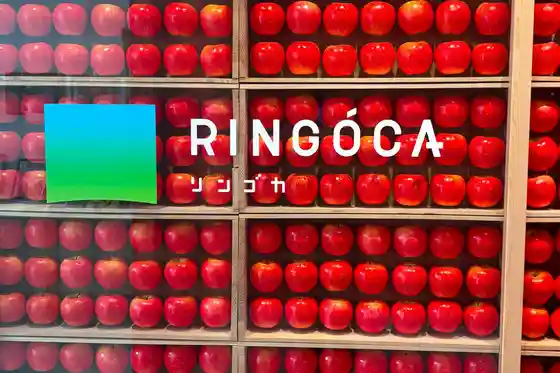
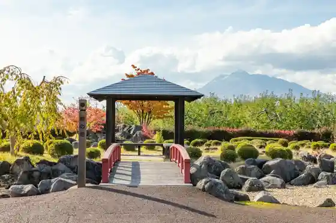
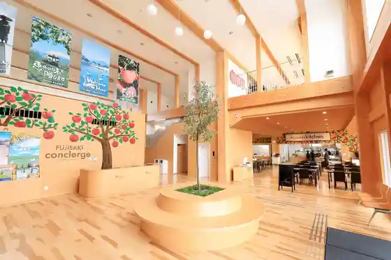
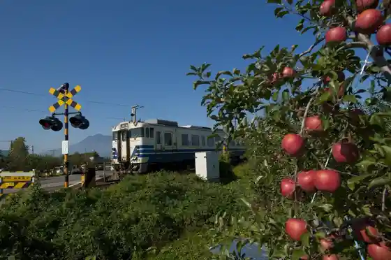

Hakucho Fureai Plaza
Fujisaki, Aomori · 0172-75-3111 · Official / source link
Fujisaki Sangyo Bunka Koryu Shisetsu RINGOCA
Fujisaki, Aomori · 0172-88-8661 · Official / source link

Karaito Omae Shiseki Park
Fujisaki, Aomori · 0172-65-3100 · Official / source link

Fujisaki Shokusai Terasu (Kyu Shokusai Tokiwa Kan)
Fujisaki, Aomori · 0172-65-3660 · Official / source link

Gonosen Hayashizaki Eki
Fujisaki, Aomori · 0172-88-8258 · Official / source link

Fujisaki Guraundo
Fujisaki, Aomori · 0172-75-3323 · Official / source link
Toku Shita Ichii no Koboku (Onko no Ki)
Fujisaki, Aomori · 0172-75-3311 · Official / source link
Ringo Kata no Ki
Fujisaki, Aomori · 0172-88-8258 · Official / source link
Kashima Shrine
Fujisaki, Aomori · 0172-32-2407 · Official / source link
Fuji Village
Fujisaki, Aomori · 0172-89-7087 · Official / source link
Fujisaki Fuji Gemboku Park
Fujisaki, Aomori · 0172-75-3111 · Official / source link
Seki Shrine
Fujisaki, Aomori · 0172-32-2407 · Official / source link
Mizube no Gakushu Plaza
Fujisaki, Aomori · 0172-75-3311 · Official / source link
Fujisaki Hachiman Shrine
Fujisaki, Aomori · Official / source link
Tokiwa Furusato Museum Asuka
Fujisaki, Aomori · 0172-65-4567 · Official / source link
Mizuki Kumano Miya
Fujisaki, Aomori · 0172-32-2407 · Official / source link
Yazawa Sei Hachiman Shrine
Fujisaki, Aomori · 0172-32-2407 · Official / source link